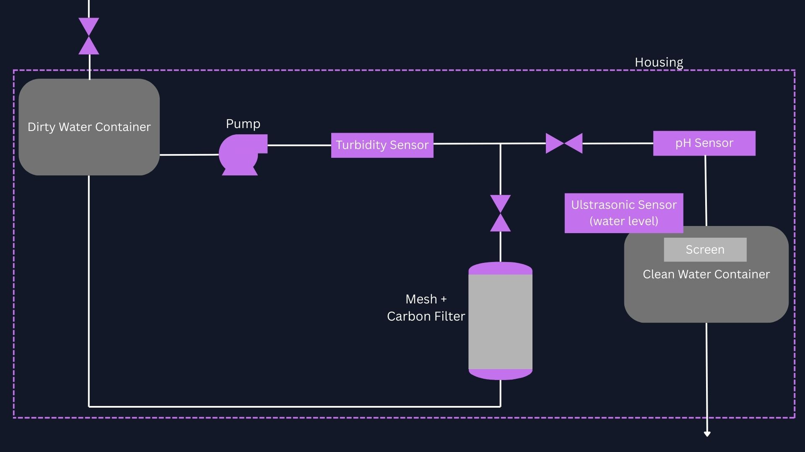

1) Introduction
Despite major advances in water treatment technology, safe drinking water remains inaccessible for roughly one in four people worldwide. Even in the United States, water quality issues persist and contribute to illness each year. As a result, there is a large and growing market for household water purification systems, with a majority of Americans now using some form of home water filter and increasingly viewing filtered water as safer than untreated tap water.
Our goal is to build an “adaptive Brita”-style water purifier that automatically circulates water through a particulate filter and an activated carbon bed until sensor feedback indicates that the water has reached an acceptable quality threshold, at which point treated water is dispensed. The system is designed to be low-cost, user-friendly, and installation-free, targeting users who care about clarity, taste and odor, and basic real-time feedback from their device. Rather than filtering continuously, the purifier operates in a semi-batch mode, producing clean water only when the clean reservoir is low. This reduces unnecessary pumping and highlights the system’s adaptive behavior.
Who is this for?
Our adaptive water purifier is designed to work effectively while remaining simple to implement. It is intended for people who want cleaner, better-tasting water without the hassle of under-the-sink installations or the inconvenience of constantly refilling and waiting, as with standard pitcher filters. Potential use cases include college dorms, rental housing, office kitchens, and emergency backup situations where tap water quality may be temporarily compromised.
What problem does it solve?
Standard pitcher filters operate on a “pour and wait” basis with little to no feedback. Users often do not know whether the water is actually clean or whether the filter media is exhausted, which can lead to:
- Inconsistent taste and odor
- Visible cloudiness or particulates
- Guesswork around filter replacement
Our system reduces this uncertainty by combining mechanical filtration with activated carbon treatment and using sensor feedback to determine when water is ready before dispensing.
Why adaptive?
Traditional filters are passive—water passes through once and the user hopes sufficient treatment has occurred. In contrast, our system uses real-time optical turbidity sensing as its primary control variable to continuously monitor water clarity during treatment. This enables:
- “Keep cycling until clean” behavior: water is automatically recirculated through the filter and adsorbent stages until turbidity stabilizes below a defined threshold
- Automatic adaptation to varying source quality: dirtier input water triggers additional filtration passes with no manual adjustment
- User confidence through feedback: a pH display provides visible confirmation of water chemistry, and treated water is released only when it is actually ready
While pH is not actively adjusted or used as the main pass/fail trigger, it serves as a secondary diagnostic metric that provides valuable context about water safety and quality. Together, the sensor-gated approach and real-time feedback improve reliability and transparency compared to passive filtration systems.
2) Overall Design
Our purifier is designed to connect to a continuous water source (for example, a faucet adapter or a feed line from a larger container). The system runs in a semi-batch cycle: it produces a batch of clean water when the clean reservoir is low, rather than filtering nonstop. This makes the system simpler, reduces unnecessary pumping, and makes the adaptive behavior clear: keep cycling the water until the sensor indicates it is clean enough to transfer.
System Concept (Semi-Batch, Sensor-Gated)
- Source connection: a feed line supplies raw water when the inlet valve is opened.
- Raw batch chamber: a dedicated container is filled to a set level at the start of each cycle.
- Recirculation loop: a pump repeatedly drives water through sensing and filtration stages.
- Clean reservoir: once water meets the turbidity threshold, it is routed into a final reservoir where pH is measured and displayed.
- User interaction: the user empties the clean reservoir when desired; the system detects low/empty and starts the next batch.
Flow Path (Detailed)
- 1) Fill: when the clean reservoir is detected as low, the controller opens the inlet valve and fills the raw batch chamber to a target level (measured using an ultrasonic sensor or a float switch).
- 2) Recirculate + treat: the pump circulates water through (i) an optical turbidity sensing section and (ii) the filtration module, then returns the stream to the raw batch chamber. This repeats until turbidity indicates sufficient clarity.
- 3) Pass condition: once turbidity stays below a threshold for a hold time (with hysteresis to prevent rapid toggling), the controller switches the plumbing from recirculation mode to transfer mode.
- 4) Transfer to clean reservoir: two pinch valves close the recirculation return path and open the path into the clean reservoir, sending the treated batch to storage.
- 5) Display + ready state: the clean reservoir includes a pH sensor whose reading is shown on a display. The system idles until the clean reservoir is emptied or drops below a low threshold, at which point a new batch is triggered.
Filtration Module (Mesh + Activated Carbon)
The filtration module uses two complementary mechanisms. First, a fine mesh or filter pad removes suspended solids through size exclusion: particles larger than the pore openings are physically retained, which reduces cloudiness and improves clarity. Second, an activated carbon stage improves taste and odor by adsorption. Activated carbon has a highly porous structure and large internal surface area, allowing it to capture dissolved organic compounds and chlorine-related species that are not removed by mesh filtration alone. Together, these stages target both visible turbidity and common "off-taste" chemical contributors.
- Fine mesh / filter pad: primarily removes particulates (silt, debris, and other suspended solids) by size exclusion and interception.
- Activated carbon bed: adsorbs dissolved molecules in its pores, improving taste/odor and reducing certain organic contaminants.
- Design considerations: flow rate affects contact time in carbon and pressure drop across the mesh; both influence performance and pump requirements.
Turbidity Sensing with a Photoresistor (Optical Clarity)
The adaptive decision variable is turbidity/clarity measured optically. A low-cost implementation uses an LED light source and a photoresistor (LDR) placed across a small inline chamber (or a transparent segment of tubing). Suspended particles scatter and absorb light, so cloudy water reduces the amount of light reaching the photoresistor. As the water becomes clearer, more light reaches the sensor and the LDR's resistance changes in a repeatable way.
- Measurement approach: the microcontroller reads a voltage divider output from the LDR, which correlates with transmitted light intensity.
- Why it is sufficient here: even without absolute NTU calibration, it provides a consistent relative signal to detect "getting clearer" and "clear enough."
- Practical notes: use a light-shielded housing to block ambient light, keep geometry fixed, and apply averaging/median filtering to reduce noise.
- Calibration plan: record a clean baseline (clear water) and a dirty baseline (intentional turbidity, such as a small amount of fine silt), then set thresholds with hysteresis to avoid valve chatter near the cutoff.
Control Logic (High-Level)
- Trigger: if the clean reservoir level is low, start a new batch.
- Fill: open the inlet valve until the raw batch chamber reaches the target level.
- Filter loop: turn the pump on and recirculate while monitoring turbidity; continue cycling while readings indicate the water is still too cloudy.
- Pass + transfer: if turbidity remains below threshold for a set hold time, switch pinch valves to route flow to the clean reservoir.
- Stop: stop the pump when the batch is depleted or when the clean reservoir is full, then return to idle.
- Display: measure pH in the clean reservoir and display it for user awareness and diagnostics.
Future Sensor Additions (If Time Allows)
If time and budget allow, additional sensors could improve robustness and provide better insight into water quality beyond turbidity alone. Examples include a conductivity/TDS sensor for dissolved ions, a temperature sensor for compensation and logging, or simple flow sensing to detect clogs and estimate filter loading over time.
Diagram

3) Chemical / Physical Principles
Our system combines mechanical filtration and activated carbon treatment, then uses sensor feedback to decide when the water is "clean enough" to transfer into the final reservoir. In general, contaminants fall into two categories that matter for this prototype: suspended particles (which drive cloudiness) and dissolved compounds (which drive taste/odor).
Filtration + treatment (mesh + activated carbon)
The treatment module is a two-stage approach in one integrated path. First, a fine mesh or filter pad removes suspended solids primarily through size exclusion and interception (particles are physically retained by pores or collide with fibers). Second, activated carbon improves taste and odor by adsorption: dissolved molecules adhere to the carbon's internal pore surfaces due to its high surface area. Recirculation increases the total number of passes and total contact time with both stages, which improves performance when the starting water quality is worse.
- Mesh / filter pad: targets turbidity-causing particles and reduces cloudiness.
- Activated carbon: targets chlorine taste/odor and many dissolved organic compounds.
- Key tradeoff: tighter filtration and longer carbon contact time improve quality but increase pressure drop and cycle time.
Turbidity and optics
Turbidity is a measure of how much suspended material is present in the water. These particles scatter and absorb light, which makes water appear cloudy and reduces light transmission through the fluid. Our filtration stage removes suspended particles so turbidity tends to improve continuously during a cycle. This makes turbidity a practical real-time variable for closed-loop control: the system can keep filtering until the turbidity signal stabilizes below a target threshold.
Our turbidity sensor uses a simple optical transmission setup. An LED shines across a small inline chamber (or a clear tubing segment), and a photoresistor measures the received light intensity. Cloudier water reduces the received intensity; clearer water increases it. The microcontroller reads the photoresistor through a voltage divider, giving a repeatable signal that correlates with clarity even if it is not calibrated to lab-grade NTU units.
- Optical principle: suspended particles scatter/absorb light, reducing transmission and increasing apparent turbidity.
- Expected trend: as filtration proceeds, transmitted light increases and then plateaus as the water becomes clear.
- Noise sources: bubbles, turbulence, splashing, and ambient light leakage can cause fluctuations in the signal.
- Design mitigation: use a light-shielded housing, fixed geometry, and filtering (moving average/median) on the sensor signal.
- Decision logic: use a turbidity threshold plus a hold time, and add hysteresis to prevent rapid switching near the cutoff.
- Calibration approach: measure a clean baseline (clear water) and a dirty baseline (intentional turbidity like fine silt), then select thresholds that reliably separate "still cloudy" from "consistently clear."
pH
pH provides context about water chemistry and is displayed to the user as an informational metric. Typical drinking water is often considered acceptable around pH 6.5–8.5. In this prototype, pH is not used as the main pass/fail trigger because pH alone does not quantify clarity or many specific dissolved contaminants, but it is useful for diagnosing unusual source conditions and verifying the system is behaving consistently across runs.
Flow, mixing, and contact time
Pump flow rate affects both pressure drop across the filter and contact time in the carbon stage. Higher flow can shorten cycle time but reduces per-pass contact time; lower flow increases adsorption effectiveness but can slow overall throughput. As the filter loads with solids, resistance increases and performance can change over time. The advantage of the sensor-gated, semi-batch approach is that the system can adapt by running longer when conditions require it.
Extensions (if time allows)
If time allows, additional sensors such as conductivity/TDS or flow could improve performance monitoring, detect clogs, and give better insight into dissolved contaminants not captured by turbidity alone.
4) General Materials and Parts List
Core Hardware
- Reservoir + treatment chamber (food-safe container)
- Silicone tubing + barbed fittings + clamps
- Pump (recirculation)
- Valve/actuator (switch recirculate vs dispense)
- Filter housing/module
- Adsorbent bed housing (DIY packed bed)
- Microcontroller (Arduino/ESP32) + power supply
Sensors
- Turbidity/optical clarity sensor (inline)
- pH probe + interface board
- Ultrasonic level sensor (or float switch alternative)
Work in progress
5) In Depth: Turbidity (Optical Clarity)
Turbidity is our primary "adaptive" signal because particle filtration directly changes optical clarity in real time. We can implement an inline LED + photodiode/phototransistor sensor or a turbidity module.
- Placement: after filter/adsorbent in the recirculation loop to measure improvement.
- Algorithm: recirculate until clarity > threshold for N seconds (hold time) + hysteresis.
- Calibration: define clean baseline vs intentionally cloudy baseline (e.g., fine silt test).
Include a simple plot later: sensor reading vs time during a cleaning cycle.
6) In Depth: pH
The pH sensor provides a real-time readout for user awareness and logging. In this design, pH is not used as the main "clean/not clean" gate, but it is useful for diagnostics and reporting.
- Response time target: stable reading within ~30–60 seconds in a well-mixed chamber.
- Placement: in the chamber or in a flowing side-stream to avoid stagnant readings.
- Calibration: 2-point calibration (pH 4 and pH 7 buffers; optionally pH 10).
7) In Depth: Adsorbent
We plan to use a DIY packed-bed adsorbent module to reduce chlorine/taste/odor and some organic compounds (depending on adsorbent selection). The bed will be held between mesh + filter pads to retain granules and block fines.
- Candidate media: activated carbon (or catalytic carbon if chloramine is a focus).
- Design variables: bed length/diameter, packing density, flow rate (contact time).
- Feasibility calc: estimate contact time = (bed volume / flow) and expected media life (later).
Add a photo/diagram of the packed-bed module once built.
8) In Depth: Ultrasound Sensor (Water Level)
The ultrasonic sensor measures the distance to the water surface to estimate chamber or reservoir level. This enables auto-refill behavior and prevents dry-running the pump.
- Mounting: above the water, pointed downward; shield from splashing.
- Noise sources: bubbles, turbulence, angled surfaces → use averaging/median filtering.
- Fallback option: float switch for simple low/high water detection.
9) Timeline
Key milestones with target dates and success metrics for tracking progress.
Milestone 1: Preliminary Design
Week 2 — Feb 3- GitHub Page live with documentation
- Block diagram finalized
- Parts list submitted
- Physical/chemical principles documented
Milestone 2: Initial Design
Week 4 — Feb 17- SWOT analysis completed
- At least 3 competitors researched with pricing
- Gantt chart published
- Value proposition defined
Milestone 3: Demo 1 — Proof of Concept
Week 7 — Mar 10- Turbidity sensor reads and logs values
- Pump circulates water through filter
- System detects "cloudy" vs "clear" difference
- Breadboard prototype assembled
Milestone 4: Demo 2 — Functional Prototype
Week 10 — Mar 31- Recirculation loop runs autonomously
- Turbidity threshold triggers transfer
- pH sensor displays reading
- Serial output logs all sensor data
Milestone 5: Demo 3 — MVP
Week 13 — Apr 28- Full system enclosed in housing
- Automated fill → filter → dispense cycle works
- Meets turbidity target consistently
- pH displayed on screen for user
10) Future Considerations + Additions (If Time)
While the current system focuses on turbidity-based control, activated carbon adsorption, and pH monitoring, several upgrades could improve accuracy, automation, and real-world usability.
Expanded water quality sensing
Adding a conductivity or total dissolved solids (TDS) sensor would allow the system to quantify dissolved contaminants that are not detected by turbidity alone. This would provide a second chemical check after carbon filtration and improve confidence in water quality.
Automatic pH control
The pH sensor could be paired with small dosing pumps to automatically adjust acidity, keeping the water in a range that is optimal for adsorption and safe for consumption. This would reduce manual intervention and improve consistency across different water sources.
Data logging and user interface
Future versions could include wireless data logging or SD card storage to track turbidity, pH, and filtration cycles over time. This would allow users to monitor filter performance and know when maintenance or replacement is needed.
Scalability and cartridge design
The activated carbon bed could be redesigned as a replaceable cartridge, making the system easier to maintain and scale for household or portable applications.